In this section I explain what I did in the electronic part of the project and also the programming.
For my project I want to use the GRBL firmware and modifies that for fit my system.
so I take some information about this on the original git hub page and from many pages that talk about this.
I let some link below.
I start working on Eagle cad and taking a Sathakit file and adding all the peripheral and the pinout i need.
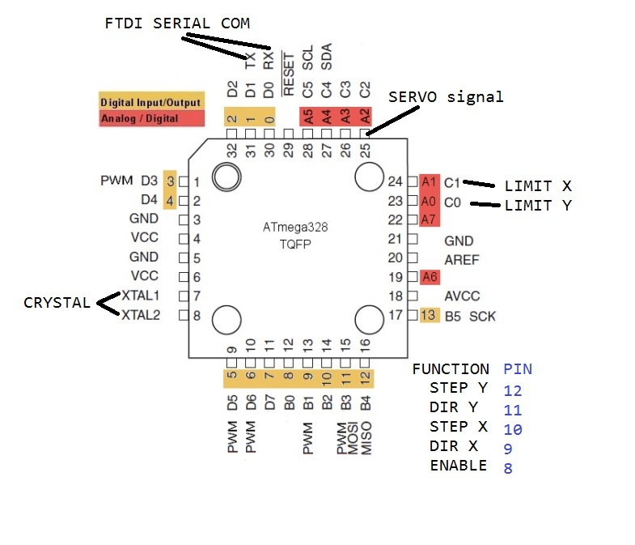
ias you can see after in the scematic and the board of eagle i also connect all the other pin remain free for future usage if needed
my board need to control 2 stepper motor, 2 endstop and a servo.
each stepper motor need 3 command pin;
-stepper
-direction
-enable
i use 2 pololu stepper driver to drive the 2 stepper motor and i made a fit to this stepper driver using a library of eagle( all is included in the file at the end of the page).
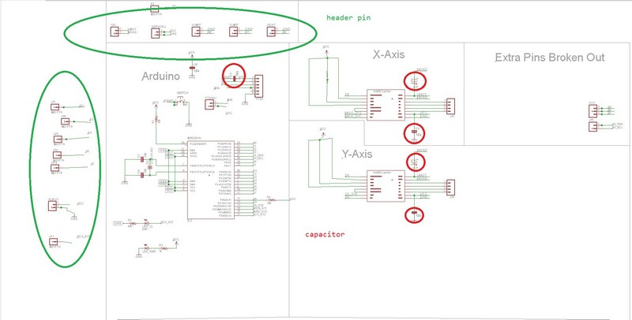
There are a bunch of capacitor in the circuit and pretty much all have the function of filtering the noise, there are two of them in the supply of the stepper driver and some more on the logic side, all needed to make as stable as possible the signal and supply power.
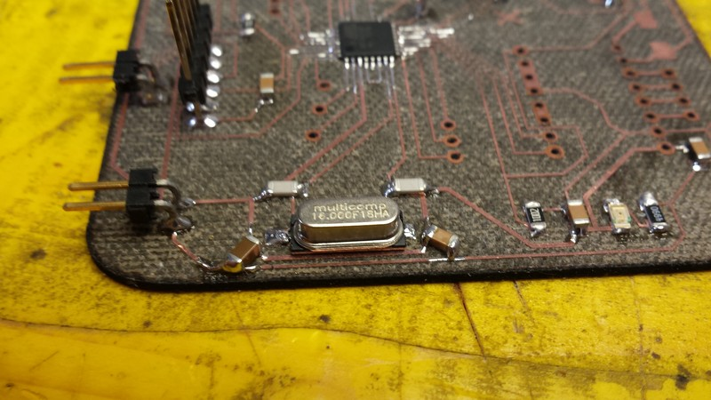
in the first version of the board, i put a single power supply at 12 volts and a linear regulator, but it give me some problem of stability in the tension.
so i decide to use a standard ATX power supply from an old pc, so it gave me 12 an 5 volts so i split the logic side and the motor side.
all the GND is in common for signal and stability purpose.
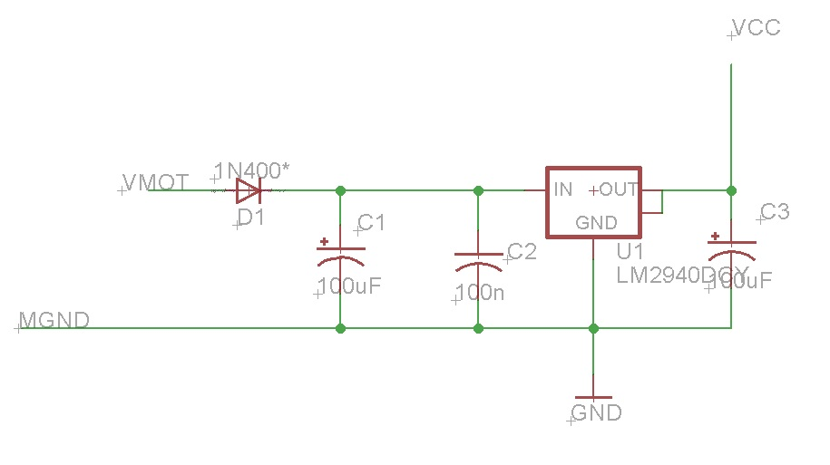
I have to put some jumper wire to separate the tension coming from the FTDI and the ATX you can see in the schematic and the board.
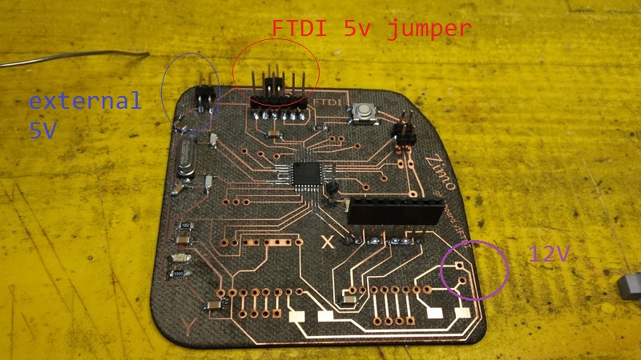
i also have some "engraving" fail with the flexx laser because the board isn't perfectly planar.
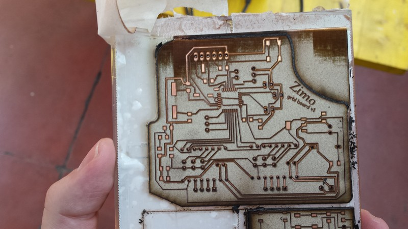
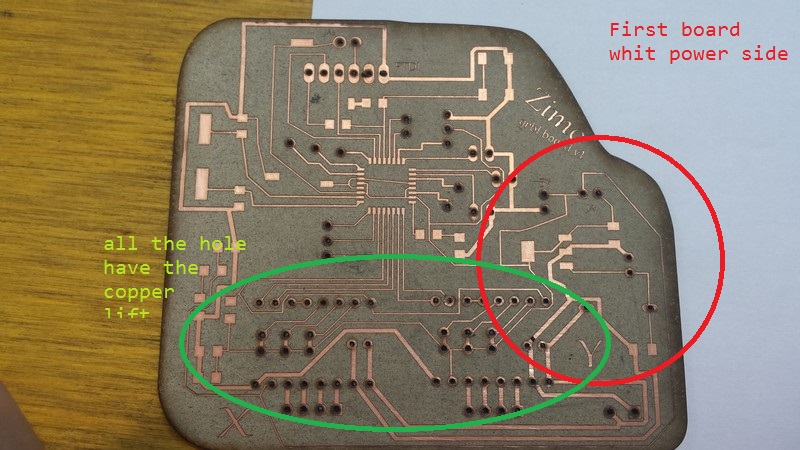
After all the assembly following the schematic I burn the bootloader with the Arduino ide.
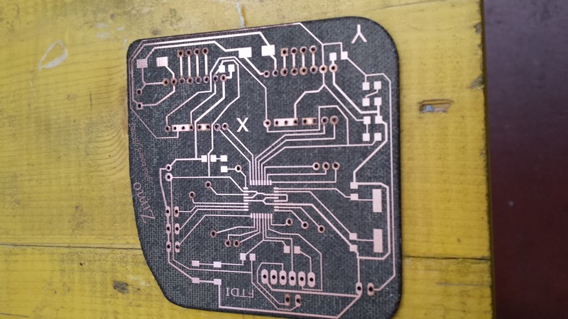
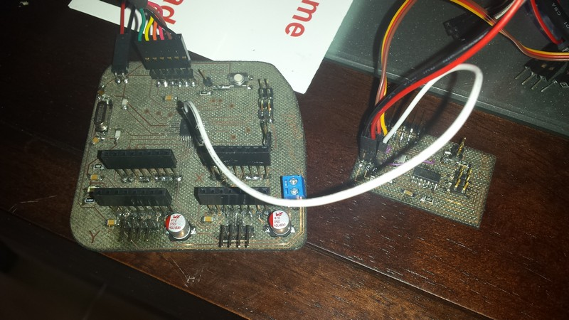
The firmware i put inside is GRBL v0.9
the step for use it and flesh it into the atmmega are the following:
-download the folder from git hub
-extract it
-import it as a library in the arduino ide
-load the example from the grbl folder called grblupload
-upload it in the atmega
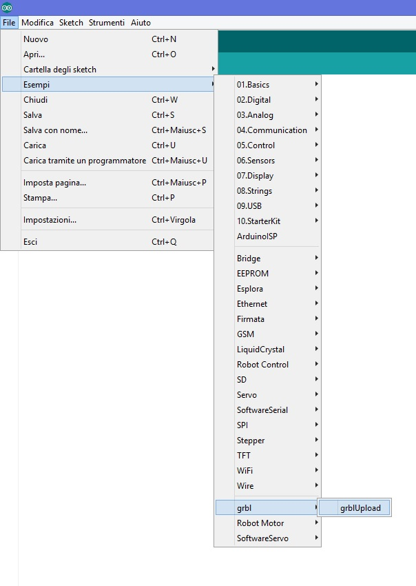
I have to modifies some setting in the configuration.h and cpu_map.h file for make the firmware git my electronics, you can see the changes below tagged with my sign in the comment.
All the other setting is made after from the grbl controller.
cpu_map.h
/*
cpu_map.h - CPU and pin mapping configuration file
Part of Grbl
Copyright (c) 2012-2015 Sungeun K. Jeon
Grbl is free software: you can redistribute it and/or modify
it under the terms of the GNU General Public License as published by
the Free Software Foundation, either version 3 of the License, or
(at your option) any later version.
Grbl is distributed in the hope that it will be useful,
but WITHOUT ANY WARRANTY; without even the implied warranty of
MERCHANTABILITY or FITNESS FOR A PARTICULAR PURPOSE. See the
GNU General Public License for more details.
You should have received a copy of the GNU General Public License
along with Grbl. If not, see .
*/
/* The cpu_map.h file serves as a central pin mapping settings file for different processor
types, i.e. AVR 328p or AVR Mega 2560. Grbl officially supports the Arduino Uno, but the
other supplied pin mappings are supplied by users, so your results may vary. */
// NOTE: This is still a work in progress. We are still centralizing the configurations to
// this file, so your success may vary for other CPUs.
/* MODIFIED BY Simone Boasso for use on grbl board */
#ifndef cpu_map_h
#define cpu_map_h
//----------------------------------------------------------------------------------------
#ifdef CPU_MAP_ATMEGA328P // (Arduino Uno) Officially supported by Grbl.
// Define serial port pins and interrupt vectors.
#define SERIAL_RX USART_RX_vect
#define SERIAL_UDRE USART_UDRE_vect
// Define step pulse output pins. NOTE: All step bit pins must be on the same port.
#define STEP_DDR DDRB //DDRD
#define STEP_PORT PORTB //PORTD
#define X_STEP_BIT 2 //ZIMO Grbl pin 10
#define Y_STEP_BIT 4 //ZIMO Grbl pin 12
#define Z_STEP_BIT 7 //4 Uno Digital Pin 4
#define STEP_MASK ((1<< X_STEP_BIT)|(1<< Y_STEP_BIT)|(1<< Z_STEP_BIT)) // All step bits
// Define step direction output pins. NOTE: All direction pins must be on the same port.
#define DIRECTION_DDR DDRB //DDRD
#define DIRECTION_PORT PORTB //PORTD
#define X_DIRECTION_BIT 1 //ZIMO Grbl pin 9
#define Y_DIRECTION_BIT 3 //ZIMO Grbl pin 11
#define Z_DIRECTION_BIT 7 //7 Uno Digital Pin 7
#define DIRECTION_MASK ((1<< X_DIRECTION_BIT)|(1<< Y_DIRECTION_BIT)|(1<< Z_DIRECTION_BIT)) // All direction bits
// Define stepper driver enable/disable output pin.
#define STEPPERS_DISABLE_DDR DDRB
#define STEPPERS_DISABLE_PORT PORTB
#define STEPPERS_DISABLE_BIT 0 // Uno Digital Pin 8
#define STEPPERS_DISABLE_MASK (1<< STEPPERS_DISABLE_BIT)
// Define homing/hard limit switch input pins and limit interrupt vectors.
// NOTE: All limit bit pins must be on the same port, but not on a port with other input pins (CONTROL).
#define LIMIT_DDR DDRC //DDRB
#define LIMIT_PIN PINC //PINB
#define LIMIT_PORT PORTC //PORTB
#define X_LIMIT_BIT 0 //ZIMO Grbl pin A0
#define Y_LIMIT_BIT 1 //ZIMO Grbl pin a1
#ifdef VARIABLE_SPINDLE // Z Limit pin and spindle enabled swapped to access hardware PWM on Pin 11.
#define Z_LIMIT_BIT 4 // Uno Digital Pin 12
#else
#define Z_LIMIT_BIT 3 // Uno Digital Pin 11
#endif
#define LIMIT_MASK ((1<< X_LIMIT_BIT)|(1<< Y_LIMIT_BIT)|(1<< Z_LIMIT_BIT)) // All limit bits
#define LIMIT_INT PCIE0 // Pin change interrupt enable pin
#define LIMIT_INT_vect PCINT0_vect
#define LIMIT_PCMSK PCMSK0 // Pin change interrupt register
// Define spindle enable and spindle direction output pins.
#define SPINDLE_ENABLE_DDR DDRC //DDRB
#define SPINDLE_ENABLE_PORT PORTC //PORTB
#ifdef VARIABLE_SPINDLE // Z Limit pin and spindle enabled swapped to access hardware PWM on Pin 11.
#define SPINDLE_ENABLE_BIT 3 // Uno Digital Pin 11
#else
#define SPINDLE_ENABLE_BIT 4 // Uno Digital Pin 12
#endif
#define SPINDLE_DIRECTION_DDR DDRB
#define SPINDLE_DIRECTION_PORT PORTB
#define SPINDLE_DIRECTION_BIT 4 // Uno Digital Pin 13 (NOTE: D13 can't be pulled-high input due to LED.)
// Define flood and mist coolant enable output pins.
// NOTE: Uno analog pins 4 and 5 are reserved for an i2c interface, and may be installed at
// a later date if flash and memory space allows.
#define COOLANT_FLOOD_DDR DDRC
#define COOLANT_FLOOD_PORT PORTC
#define COOLANT_FLOOD_BIT 2 //AUX PIN ZIMO grbl pin A2
#ifdef ENABLE_M7 // Mist coolant disabled by default. See config.h to enable/disable.
#define COOLANT_MIST_DDR DDRC
#define COOLANT_MIST_PORT PORTC
#define COOLANT_MIST_BIT 4 // Uno Analog Pin 4
#endif
// Define user-control controls (cycle start, reset, feed hold) input pins.
// NOTE: All CONTROLs pins must be on the same port and not on a port with other input pins (limits).
#define CONTROL_DDR DDRC
#define CONTROL_PIN PINC
#define CONTROL_PORT PORTC
#define RESET_BIT 0 // Uno Analog Pin 0
#define FEED_HOLD_BIT 1 // Uno Analog Pin 1
#define CYCLE_START_BIT 4 // Uno Analog Pin 2
#define SAFETY_DOOR_BIT 1 // Uno Analog Pin 1 NOTE: Safety door is shared with feed hold. Enabled by config define.
#define CONTROL_INT PCIE1 // Pin change interrupt enable pin
#define CONTROL_INT_vect PCINT1_vect
#define CONTROL_PCMSK PCMSK1 // Pin change interrupt register
#define CONTROL_MASK ((1<< RESET_BIT)|(1<< FEED_HOLD_BIT)|(1<< CYCLE_START_BIT)|(1<< SAFETY_DOOR_BIT))
// Define probe switch input pin.
#define PROBE_DDR DDRC
#define PROBE_PIN PINC
#define PROBE_PORT PORTC
#define PROBE_BIT 5 // Uno Analog Pin 5
#define PROBE_MASK (1<< PROBE_BIT)
#ifdef VARIABLE_SPINDLE
// Advanced Configuration Below You should not need to touch these variables
#define PWM_MAX_VALUE 255.0
#define TCCRA_REGISTER TCCR2A
#define TCCRB_REGISTER TCCR2B
#define OCR_REGISTER OCR2A
#define COMB_BIT COM2A1
#define WAVE0_REGISTER WGM20
#define WAVE1_REGISTER WGM21
#define WAVE2_REGISTER WGM22
#define WAVE3_REGISTER WGM23
// NOTE: On the 328p, these must be the same as the SPINDLE_ENABLE settings.
#define SPINDLE_PWM_DDR SPINDLE_ENABLE_DDR
#define SPINDLE_PWM_PORT SPINDLE_ENABLE_PORT
#define SPINDLE_PWM_BIT SPINDLE_ENABLE_BIT // Shared with SPINDLE_ENABLE.
#endif // End of VARIABLE_SPINDLE
#endif
Configuration.h
I report only the two canges of this file one for the baud rate of comunication serial protocol, and the other to enable the CORE XY cinematic
// Serial baud rate
#define BAUD_RATE 115200 //modified for ZIMO grbl board
// Enable CoreXY kinematics. Use ONLY with CoreXY machines.
// IMPORTANT: If homing is enabled, you must reconfigure the homing cycle #defines above to
// #define HOMING_CYCLE_0 (1<< X_AXIS) and #define HOMING_CYCLE_1 (1<< Y_AXIS)
// NOTE: This configuration option alters the motion of the X and Y axes to principle of operation
// defined at (http://corexy.com/theory.html). Motors are assumed to positioned and wired exactly as
// described, if not, motions may move in strange directions. Grbl assumes the CoreXY A and B motors
// have the same steps per mm internally.
#define COREXY // Default disabled. Uncomment to enable.
for the servo board i use the one i made in the output device exercise, so i rebuild the same board as before i only modify the firmware to fit my need.
this board will receive a digital input level, and if the pint is high it drive the servo to the push position, otherwise it will put the servo in the retract position.
this is made using the standar 8bitservo library used in the input device exercise.
Servo drawers sketch
#include < SoftwareServo.h>
SoftwareServo myservo; // create servo object to control a servo
// twelve servo objects can be created on most boards
const int ActivationPin =8 ; // the number of the pushbutton pin
const int ledPin = 7;
int buttonState = LOW; // variable for reading the pushbutton status
int prevstate= HIGH; //prevoius state of button
int repeat = 0;
int pos = 0;
void refreshservo(){
SoftwareServo::refresh();
delay(45);
}
void setup()
{
pinMode (ActivationPin, INPUT);
pinMode(ledPin, OUTPUT);
myservo.attach(2); // attaches the servo on pin 9 to the servo object
}
void loop()
{
buttonState = digitalRead(ActivationPin);
if (buttonState == LOW) {
delay(1); //little debounce
if (buttonState == LOW){
if (prevstate== HIGH){
prevstate=LOW;
digitalWrite(ledPin, HIGH);
myservo.write(1);
delay(45);
SoftwareServo::refresh();
}
}
}
else{
delay(1);//little debounce
if (buttonState == HIGH){
if (prevstate== LOW){
prevstate= HIGH;
digitalWrite(ledPin, LOW);
myservo.write(179);
delay(45);
SoftwareServo::refresh();
}
}
}
SoftwareServo::refresh();
}
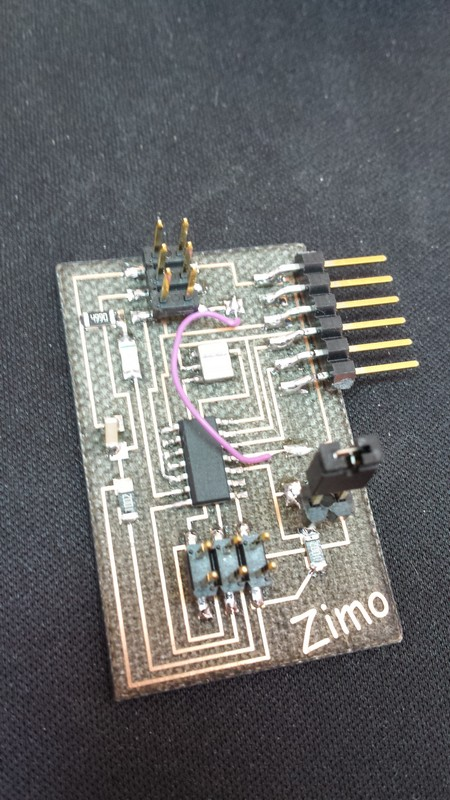
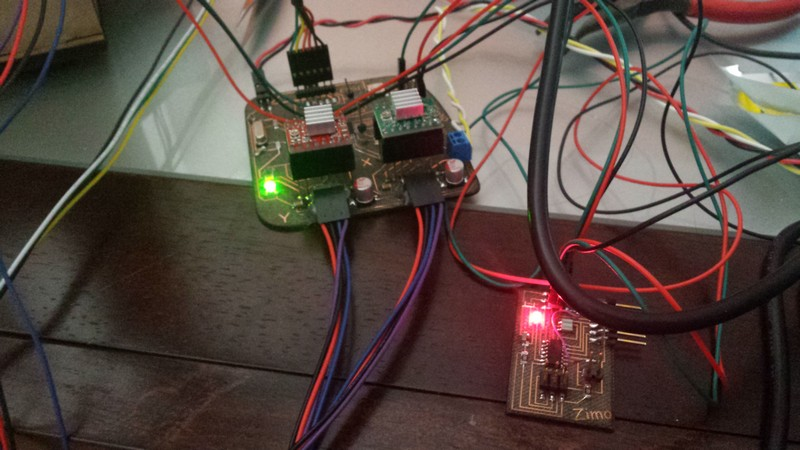
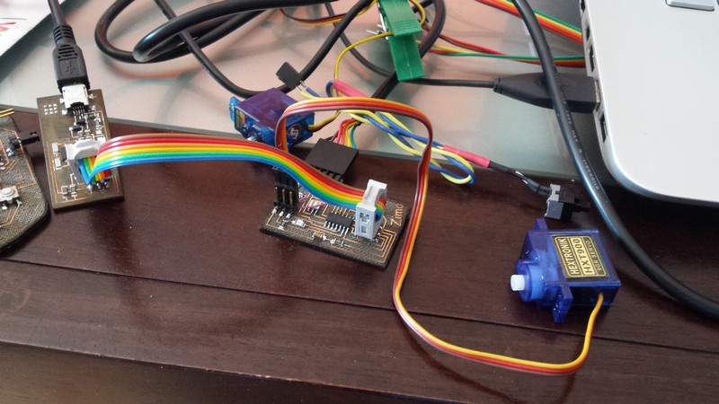
all the connection are explained in the schematic of eagle and Also in the eagle board
To keep the stepper driver at the right temperature i made a little box to fit all the electronics and i make the top side with a hole for a fan that runs at 12 volts.
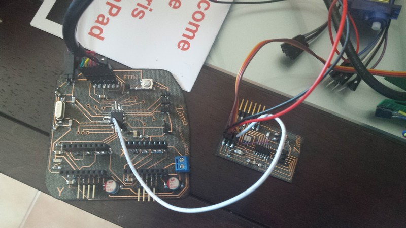
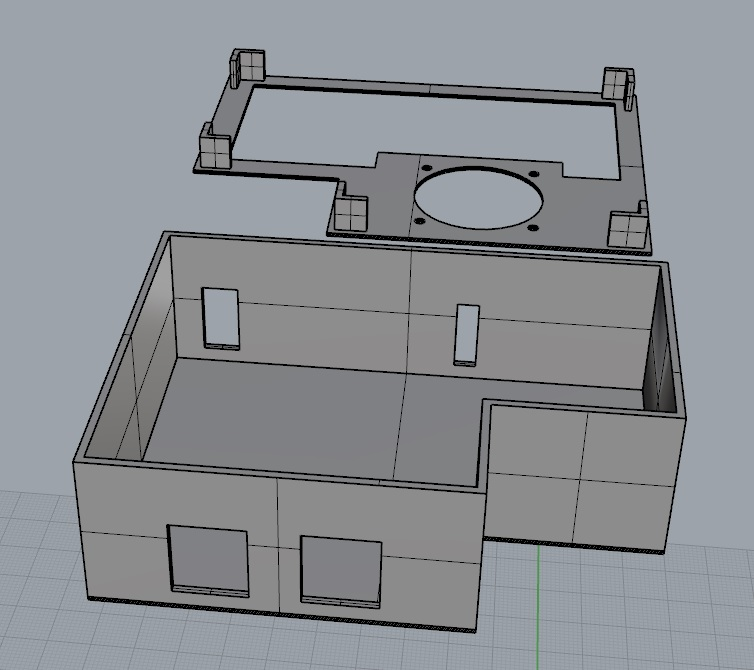
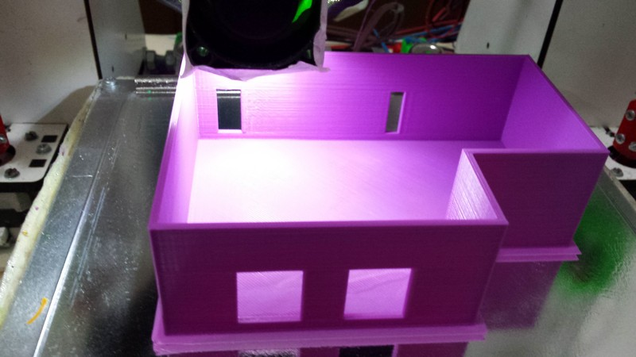
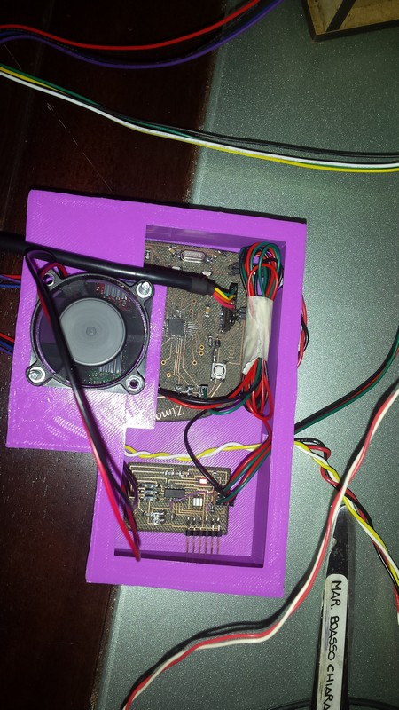
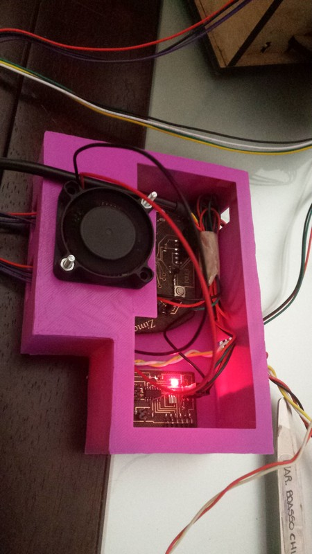
For send the data to the board i use the free software GRBL controller.
This program is simply a serial sender that connect via FTDY cable to the serial interface of the micro,
it have a built in some feature to control the motion of a g code based mach
At the start up the GRBL inside the board will send the setting to the user interface, here by sending simple code you can set some parameter like acceleration, speed, end-stop settings and so on.
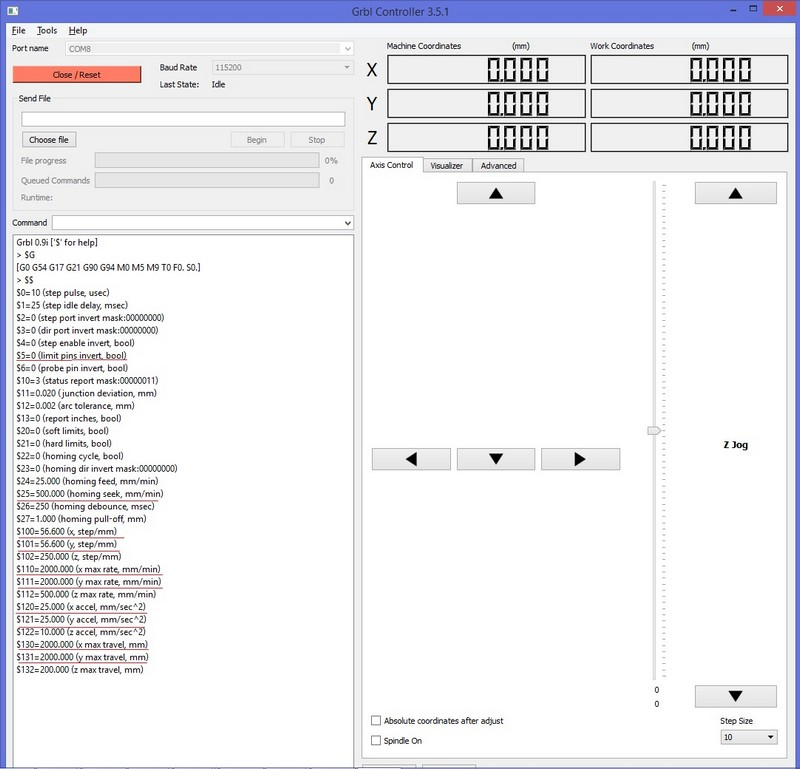
In the screen above you can see the reed underlined parameter that I change to fit my machine.
The step for mm are calculated based on the diameter of the pulley i design.
here the code i write to make the video.
The command M8 activate the servo push
The command M9 deactivate the servo to be in retract position
The little 3 movement are for loose time for let the servo push the draws.